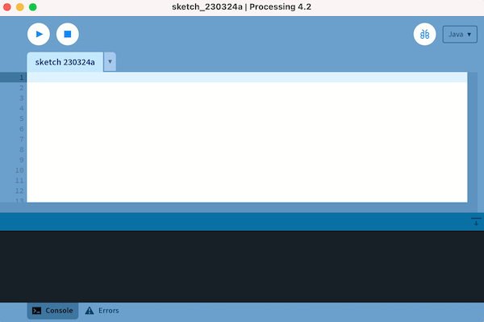
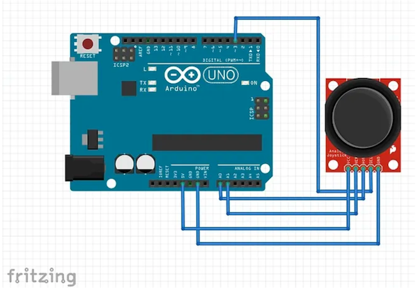
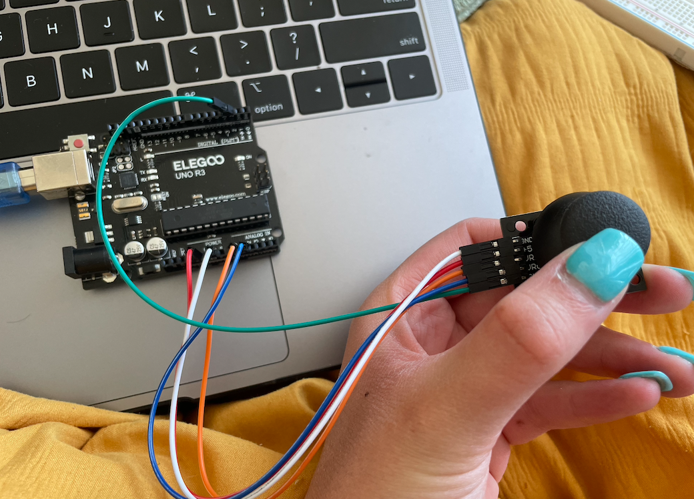
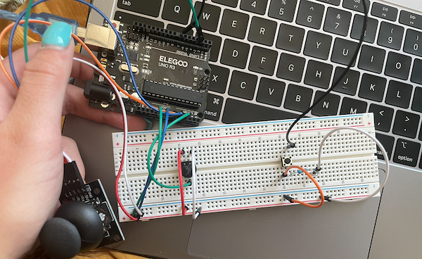

This lab was completed on April 5, 2023.
Overview
In this lab, I learned how to use processing to create different graphics using the arduino hardware.
Materials
The materials used for this lab were:
↠ Arduino (Elegoo) Uno R3 Controller Board
↠ USB Cable
↠ USB Adapter (if you have a USB-C-only laptop)
↠ Breadboard Jumper Wire
↠ Joystick
↠ Multimeter
Part 0: Setting up Processing
The first step was to set up processing. I downloaded the software for my Mac OS system.
Part 1: Creating with Processing
Processing is a programming environment for creating drawings, animations, and interactive programs. I first wrote a sketch, which creates a window and starts drawing white citcles at the mouse position. Then I changed the ellipse color and size. Both of these results can be seen below.
Part 2: Processing with Arduino
In the second part of the lab, I connected processing to Arduino so that I could use a joystick to add an interactivity element. Then, I connected the joystick up to the arduino following the Fritzing diagram shown below. I have the arduino controlling where the ellipse is placed by mapping the position, and the joystick position and whether the button is pressed determines the color using the sw value.
 Part 3: Creating my own Visualization
Lastly, I added a button and a potentiometer to my circuit that also helped control the visualization. The potentiometer changed the color acoording to a gradient of the ellipse, and the button changed the size of the ellipse. For the gradient, I added a map function to map the values of the potentiometer and then corresponded those values to the value of a gradient. For the button, it detected whether the button was pressed on or off, and used that value to determine the size of the ellipse through an if statement.
Conclusion and Reflection
In conclusion, I thought that this was a fun lab and it was interesting to experiment with Processing.